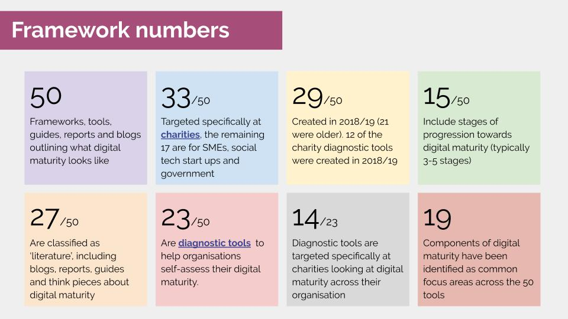
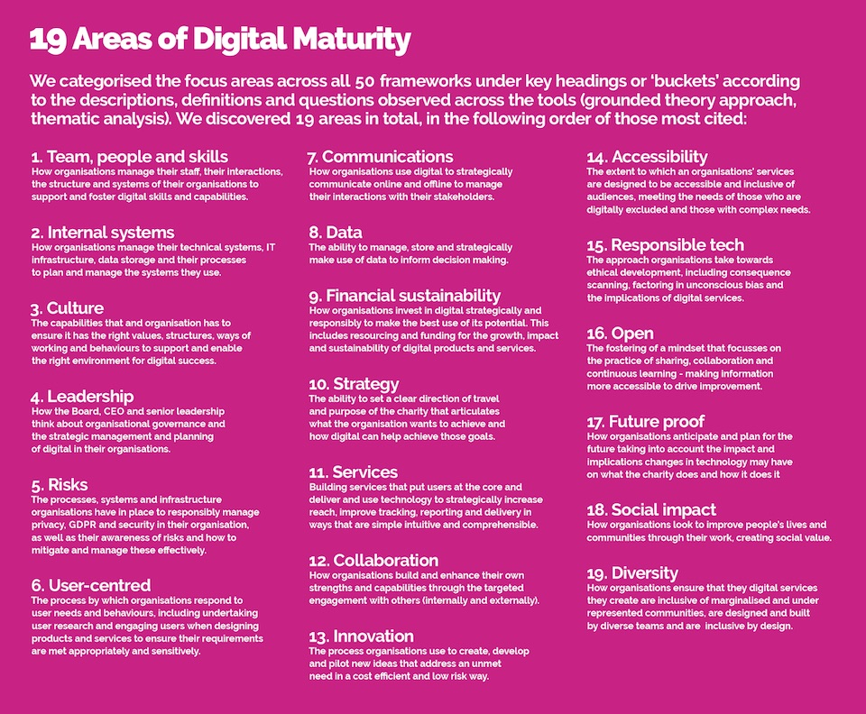
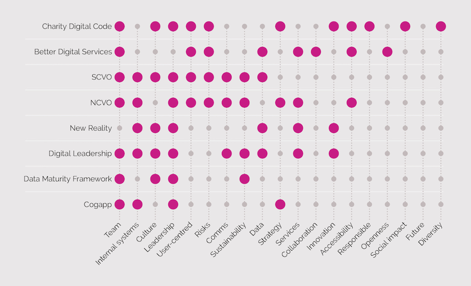

Over the course of the last three months, Innovation Unboxed, Think Social Tech, and CAST have been building a picture of the shape and nature of digital maturity frameworks. Following contributions from a range of stakeholders (responding to this blog post), we identified 50 unique digital maturity diagnostic tools, think pieces, surveys, codes and reports in this Airtable most relevant to the charity sector. We analysed their content and identified consistent patterns in how they describe what digital maturity should look like.
What surprised us most is that despite the ‘noise’ surrounding digital maturity, there is little shared vision as to what best practice looks like. The evidence base for these tools is limited the milestones of progress are poorly defined. As a result, it is incredibly challenging to identify the most appropriate pathways organisations could follow when taking the next steps in digital. At best, each framework simply offers a starting point for what organisations should be thinking about. At worst, they risk setting unfair standards and sending charities down a path that isn’t helpful. This blog shares the resources we’ve created to help navigate this field and makes some recommendations both on what is useful and where we have identified gaps that need to be further explored. We hope it provides a foundation to build a cross-sector understanding of what digital maturity means.

When we started this project we knew we would find a lot of digital maturity frameworks, but we didn’t realise how confusing these would be to choose between, compare and use. We concluded that there is no single authoritative framework that is appropriate to recommend across the charity sector. Instead, it is worth reviewing a shortlisted selection of the ecosystem of tools out there for getting to grips with digital. We developed the following resources to help navigate through these.
We hope that the resources we have put together help to fill the gap in knowledge of what exists and good practice. Longer term, we believe a shared understanding of digital maturity and best practice in describing this is needed in the social sector to help tool developers enhance their work.
Across the 50 digital maturity frameworks, we discovered 19 common focus areas used to breakdown and describe digital maturity. Many frameworks lacked detailed milestones and indicators of progress. However, we did find consistency in how the 19 areas were described as shown in the image (also outlined in the Guide).

Coverage of these 19 areas is incredibly patchy, both across the 50 frameworks and for the 8 that we recommend in the Guide, as shown in the image below. We also found that:
Furthermore, the frameworks typically only address 7 areas of digital maturity. This divergent coverage adds another layer of complexity for organisations looking for guidance on what to prioritise. Those choosing and using a framework may not know what they don’t know, and important areas for them might be missing from the tool. We are not suggesting that these frameworks should all cover 19 different areas and indeed, we believe this could make them less helpful. However, we do feel more attention is needed about what is prioritised across different tools and where else organisations could go to learn more about other areas. Many of these frameworks stand alone and need to be better connected to support, resources and guidance to help organisations decide what next.

Finally it is important to note that diagnostic tools typically rely on self-assessment and scoring. This will directly point organisations as to where they should invest their time, energy and resources. Benchmarking scores (for example, comparing scores with similar size charities) can help manage expectations of where organisations should aspire to. However, scoring can still underplay or overplay the significance of key areas as well as the progress that needs to happen. Very few of the tools provide effective signposting and resources other than to their own services. The landscape for support looks to be competitive and as a result, fragmented.
It is hard to see how these tools can work more effectively without strategic investment for tool developers and a coordinated approach to developing evidence based milestones and indicators of progress. We know that there are many more diagnostic tools actively in use that are not in our list, particularly those used by consultants, as well as new tools already in development.
We believe there is a need to build the quality of digital maturity frameworks and the support surrounding them. To do this, we need to:
We are currently exploring options to address some of these needs and would welcome your feedback, ideas and support for continuing this project. Please do get in touch with Innovation Unboxed or Nissa or simply drop the basic details in this form or share your thoughts on Twitter.